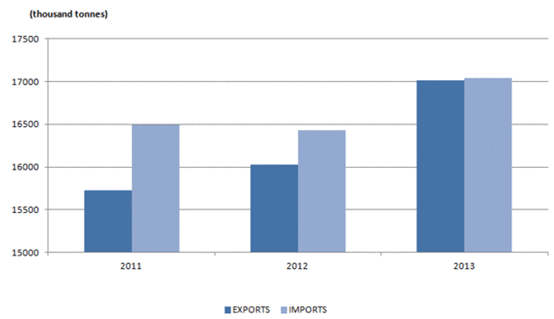
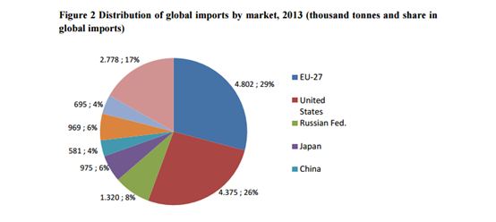

|
Bananas are one of the most commonly eaten fruit across the globe. Because bananas do not require certain condition to be grown in, they were being planned in at least 107 countries. In 2015 alone banana exports by countries totaled 11 billion US dollars. And among these countries Latin American and Caribbean countries have the highest dollar value worth of banana exports with up to $6.3 billion exports or 59.3 % of global banana sales followed by Europe with 22.1% of total exported bananas and African accounted for 6.8%. Looking at imports, The European Union, The United States and the Russian Federation are the three largest bananas countries(regions) of the word. In 2014 US alone imported over $4 billion dollars, imported over 4 million metric tons of bananas and covered over 26 % of worlds imports. Although the import price for US lowered from 2013-2012 staying around at 800 US dollar/tones but the decline was not transmitted to retail price, because of the high demand for fresh fruit in us the price remained high at 1.3 usd/kg in 2013. |
 |
|  |
The three largest banana traders in the world according to the Food and Agriculture organization are Chiquita, Dole and Del Mote, and the combined market of these three was at the highest during the 1980’s when they controlled almost two-thirds of the world banana exports, but the shares have declined since, in 2013, the market share of top five companies was 44.4%. Bananas first goes from producer to co-operative fruit sale society then to commission agent where they then to wholesalers then retailer and at last to consumers. And in recent years we see a large shifting power along the supply chain towards the retailers, because they are the one who controls the grocery sector in import countries. |